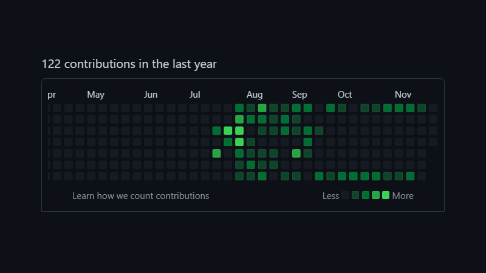

This year has been pretty interesting for me in terms of the time spent trying to do and find some new things or skills or hobbies.
I tried a lot of new things this year and have planned for trying out more next year hopefully,
Initial Quarter of the Year
7th of January - 1st of March
I consider the start of this journey by 7th of January, because on this day I tried Pixel Dailies for the first time and just decided to stick with it for as long as I could. This was going fairly great as I could see my consistency in form of my tweets.
But the mindset of "Sticking With It For as Long as Possible" changed when I saw a tweet of a fellow pixel artist showcasing all his January's pixel dailies attempts, I wanted to do that too but I was missing the initial 6 attempts of the Month. Then I decided to make sure to stick with it for the Month of Feburary. I did sticked with it until the end of Feburary but found it difficult to stick for longer.
On 1st of March I made a simple barrel for Pixel Dailies as the theme was BARREL, and after that my consistency in Pixel Dailies just disappeared into the thin air.
I also have a Blog on Making Pixel Art for 54 Days Straight.
4th of Feburary - 7th of Feburary
While keeping up with Pixel Dailies I also tried a Game Jam "Mini Jam 99 : Birds". It was a 3 days long Game Development jam. It's theme was announced before it started but limitation was announced just as the Jam started and limitation was "Can't Stop Moving". So I made a Topdown game with a Seagull as the player, who have to dogde poles on the surface of sea while keep on moving forward.
The Second Quarter of the Year
15th of May - 26th of June
In this period of time I thought to try to learn DSA (Data Structures and Algorithms), so first of all I made a C file, copied code for making and reversing a Linked List and tried to see if it worked (for no reason, even though I knew it would work I still copy pasted some code).
I tried doing DSA by myself for sometime, but felt it pretty boring, so on 3rd of June I created an account on Leetcode. Initially I tried choosing some random problems on Leetcode and try to solve them, but just 2 days later I joined "2 Weeks Study Plan To Tackle DS". In the beginning I was trying to solve any problem that I can and leave the one which I didn't understood, but changed my mind later and started looking on the internet for solutions of problems which I didn't understood and try to understand their solutions. And it worked fairly well, I was starting to understand more about Data Structures and how they can be used.
The Third Quarter
2nd of June - 13th of September
During the start of June I had started journaling my days before going to bed. I just wrote about the things I did which were productive and which were unproductive. I was fairly consistent with it and felt some positive changes in my productivity too.
I did for more than 3 months (104 days to be precise) straight. I eventually stopped journaling my days because of sudden change in my schedule due to admission in Higher Secondary School.
21st of July
I published my first Game made with C#, Round Pong. This game was made solely because I wanted to learn C#, I saw few YouTube Videos on how I can learn C# and tried to setup Raylib_cs on my system which is basically a wrapper for Raylib.
I also recorded a timelapse of the process and upload it on YouTube. Which was just my second YouTube video. I also open-sourced it just as it was released, which reminded me about how I can work on some open-source projects or open-source my previous projects I made for practice.
1st of August - 30th of August
I was working on my open-source project "Radius2D". I had made this project earlier in C++ but didn't open-sourced it. As I was looking for some project to work on GitHub and it's code was complete spaghetti, I decided to make it from scratch using C# while having it on a GitHub repository. I decided to name the repository "Radius2D" and upload the old files of C++ code and worked on C# to replicate it. After that I realized it's performance was bad and needed to be improved.
I have written a Blog on my experience of Working on my own Physics Engine.
19th of August - 21st to August
While working on Radius2D I gave myself a break of two days because, I joined the Kenney's Jam 2022. Theme of the Jam was "Growth". For the Jam I made a game with Space Battle, where you have to fight Enemy Battle Ships and collect their Material to grow Size of your Battle Ship. I recorded the Time-lapse and uploaded on YouTube, and also open-sourced it on GitHub.
3rd of September - 20th of September
It was the time when I decided to build my own Personal Portfolio Website. I made it with the purpose of showcasing all my projects at one place, including the Game uploaded on Itch open-source projects on GitHub and even some pieces of my Pixel Art. I also had a thought that I might even write some Blog Posts.
I made the website added different sections to it, and though Blogs were not available in the beginning, I added them soon after it was deployed. For Pixel Art, it was not added for a fairly long time.
Last Quarter
24th of September - 25th of December
I have gotten admission in a Higher Secondary School, and am having little to no time for working on my projects. I decided to work on my projects only on Weekends. On those weekends I worked on Radius2D as well as my Website, I wrote the Blogs in that time, added some new features in Radius2D in that time, published Radius2D's Nuget Package and even added Pixel Art Section on my Website.
I have a Blog about Programming on Weekends only.
Conclusion
Made 106 pixel art pieces, 54 of them were made consistently.
Developed 3 mini-games.
Did a LeetCode Data Structures Course.
Tried Journaling my Days for 104 days Straight.
Developed a Physics Engine.
Published a Nuget Package of my Physics Engine.
Made myself a Personal Portfolio Website.
Wrote 4 blogs.
Made roughly 150 contribution to my Projects on GitHub.
Goals for 2023
-
Contribute to Open-Source Projects
I would want myself to contribute to some open-source projects by other individuals on GitHub to experience how it is like to work with others.
-
Write 12 Blogs
I also want myself to write blogs for my own Website. I have set a target of 12 Blogs Next Year (1 Blog Each month), which might sound like a small target, but I don't want myself to focus on numbers, but I want to push myself to do something new every month and write it in format of a Blog.
-
Work on an A.I or M.L Based Project
I am currently very interested in Artificial Intelligence and Machine Learning, but I couldn't work on a project regarding that topic due to lack of my knowledge. So I set a target to learn more about them and work on an A.I or M.L project or more specifically a Neural Network project with Genetic Algorithm.
-
Get Back to Journaling My Days
I feel like journaling my days had a positive effect on me and leaving them was a bad idea. So I would try to journal my days for as long as possible, so that I can develop a habit out of it.